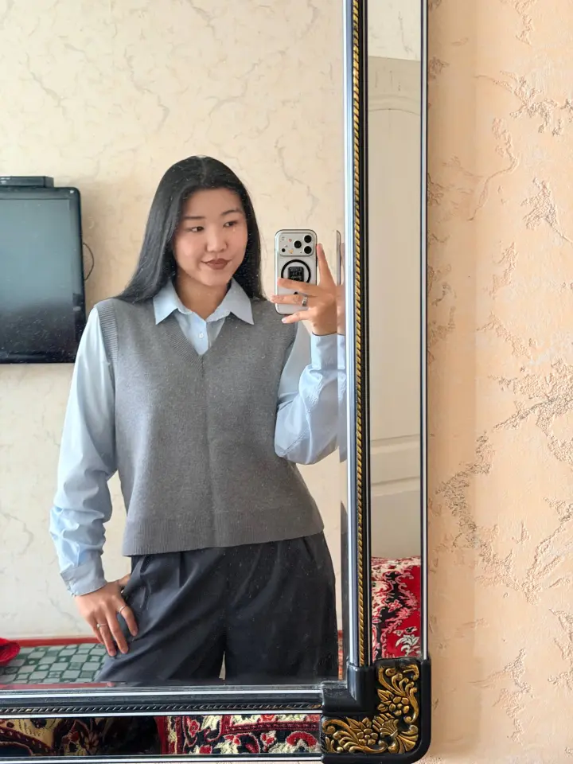

i'm just a girl ✿Привет 👋
Я Надя — и это мой маленький уголок в интернете
Веду Telegram-канал SM daily — дневник про обычные дни, которые хочется запомнить. Осень, кино, образы, подружки и зеркальные селфи — всё туда.
А ещё у меня есть YouTube: влоги из ДВФУ, корейский, дорамы и Q&A с подружками. По будням меня зовут Надежда Вениаминовна.
- 📸 фото
- 🍂 осень
- 🎬 кино
- 📚 школа
- 🇰🇷 корейский
- ☕ daily
летом
56 дней была просто Надей
Прогулки, наушники, листья, подруги, кино и бесконечные фото. Блог, кофе и лицо уточкой.
- блог
- фоточки
- прогулки
- 😗
с сентября
…а потом снова Надежда Вениаминовна
Звонки, тетради, доска и класс, который знает меня только так. Строгая? Ну… почти.
- уроки
- тетради
- переменка
- 📚
Дневник
Кадры из SM daily
YouTube
Влоги на SM daily
— из описания канала